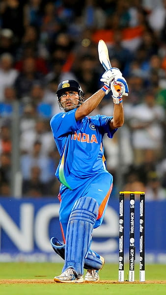
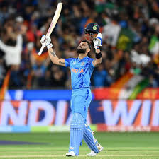
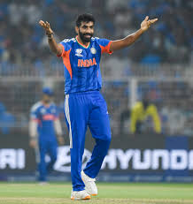
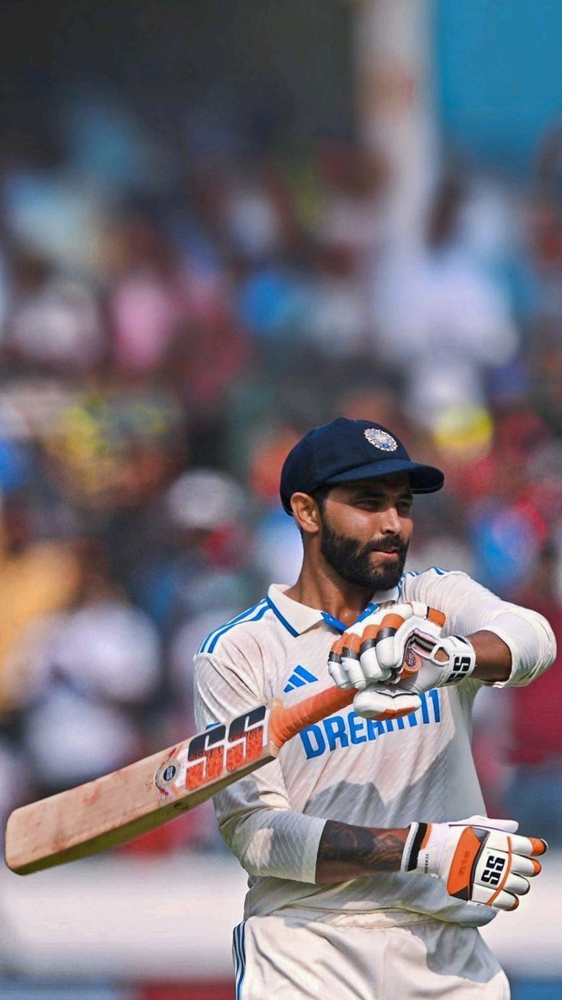

He is a legendaryWicket-Kepper and captain.
played a match-winning knock of 91* in the 2011 ICC Cricket World Cup Final, leading India national cricket team to victory against Sri Lanka national cricket team. He finished the game with a famous six at Wankhede Stadium, securing India’s historic World Cup win after 28 years.
made his international debut for India in 2004 in an ODI against Bangladesh and had a quiet start, getting run out for a low score. However, he quickly gained attention with his explosive batting, especially his famous 148 against Pakistan in 2005, which showcased his aggressive style. Coming from a small town, Ranchi, Dhoni’s fearless approach and powerful hitting made him stand out. In his early years, he established himself as a reliable wicketkeeper-batsman and soon became known for his calm mindset, which later earned him the nickname “Captain Cool” as he began taking on leadership roles in the team.

He is a Prolific run scorrer and an agressive batter.
Against Australia, pressure hits different—but so does Virat Kohli. He doesn’t just chase, he dominates. 🇮🇳
He rose through the ranks playing for the Delhi cricket team and gained major recognition when he captained India to victory in the 2008 ICC Under-19 Cricket World Cup. Kohli made his international debut in 2008 against the Sri Lanka national cricket team and, although he initially struggled to secure a permanent spot, he soon established himself with consistent performances, including his first ODI century in 2009. Known for his aggressive mindset and strong chasing ability, Kohli became a key player in the Indian team by 2011 and was part of the squad that won the 2011 ICC Cricket World Cup, marking the beginning of his rise as one of the world’s leading batsmen.

He is a World-classfast bowler with an unothodox action.
In that match, Bumrah produced a fiery spell of 4 wickets for just 17 runs (4/17) in a single session. He destroyed Australia’s top order by dismissing key batters like Usman Khawaja, Steve Smith, and others in quick succession. Australia collapsed to 67/7, completely turning the match after India had been bowled out cheaply
made his international debut for India national cricket team in January 2016 in an ODI against Australia national cricket team, where he impressed with his unusual bowling action and ability to deliver yorkers under pressure. Before his international breakthrough, Bumrah rose through the ranks playing domestic cricket for Gujarat cricket team and gained major attention in the Indian Premier League with Mumbai Indians, especially under the guidance of Lasith Malinga, who helped him refine his death bowling skills. In his early years, Bumrah quickly became known for his pace, accuracy, and calmness in crucial moments, establishing himself as India’s go-to bowler in limited-overs cricket and later evolving into a world-class performer across all formats.

He is an exceptional all-rounder and a livewire fielder.
scored a brilliant unbeaten 107* against the England cricket team in the 4th Test at Old Trafford (2025), playing a crucial match-saving innings under pressure; coming in at a difficult stage, he showed excellent patience and technique in challenging English conditions, building key partnerships and ensuring India avoided defeat, as the match ended in a draw, making this knock one of his finest overseas performances and highlighting his importance as a dependable all-rounder.
made his international debut for India in 2009 in an ODI against Sri Lanka and was known early on for his sharp fielding, left-arm spin, and useful lower-order batting. Before entering international cricket, he gained attention by being part of India’s Under-19 team that won the 2008 World Cup. In his early years, Jadeja was often seen as a promising all-rounder but faced criticism for inconsistency with the bat. However, he gradually improved his performance, especially in Test cricket, where his disciplined bowling and fighting batting helped him become a regular member of the Indian team.